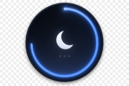

Claude Code 작업 중 화면이 꺼지고 잠기는 것을 막아주는 데스크톱 타이머. 자리를 비워도 작업이 끊기지 않습니다.
충전 중(AC 전원)일 때만 절전 제어를 활성화해 디스플레이 절전·스크린세이버·화면 잠금·시스템 잠자기를 모두 막습니다. 배터리 상태에서는 평소처럼 동작해 배터리를 보호합니다.
여러 Claude 계정을 원격에서 손쉽게 전환합니다. 로그인 인증은 브라우저 OAuth로 한 번만 거치면 되고, 이후 전환은 자동입니다.
다른 세션에 지정한 시각에 메시지를 자동 전송하는 예약 기능과, 세션별 사용량 추적을 제공합니다. 자리를 비워도 작업 흐름이 끊기지 않게 돕습니다.